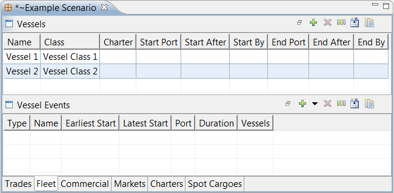
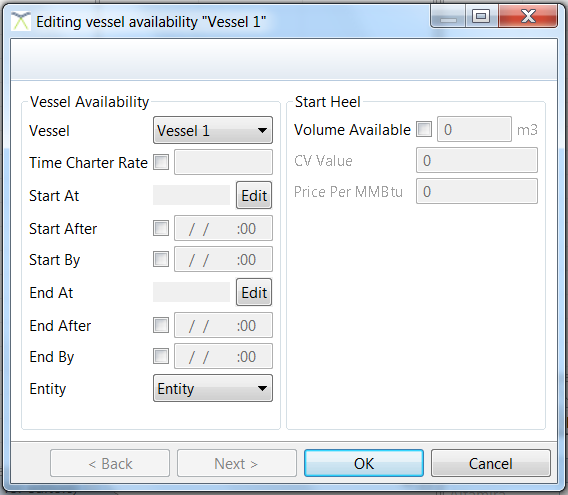
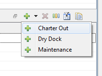
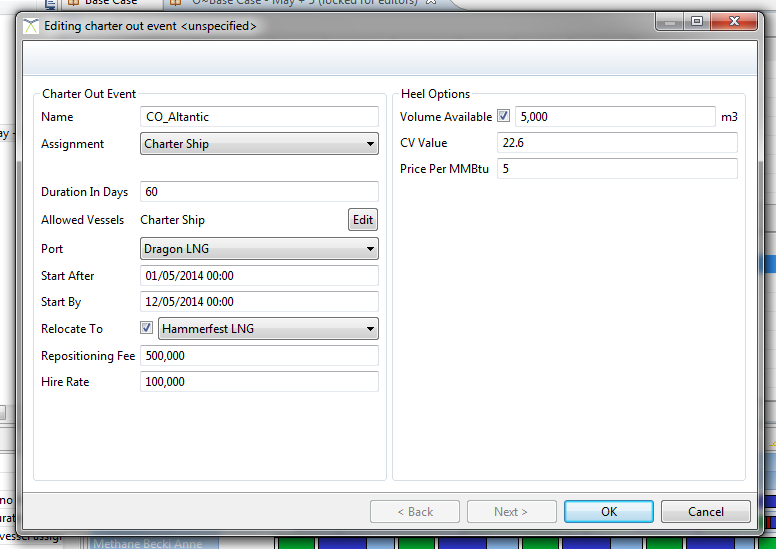

The fleet tab shows which vessels are in the fleet and when they are available. This tab also displays the non-cargo vessel events such as dry-docks and charter outs.


This dialog allows you to edit various fields associated with a vessel’s availability to the fleet. Note that the vessel’s details must already have been created in the LiNGO application [ see “Vessels” ] in order to add it to the fleet.
|
Availability Details | |
|
Vessel |
The vessel being allocated to the fleet for LNG trading. |
|
Time Charter Rate |
Optional cost per day for the vessel. This can be a fixed number or an expression on the charter curves. |
|
Start At |
The port the vessel starts at when it is allocated to the fleet. If left blank, the vessel is assumed to be available to start trading at any port. |
|
Start After / Start By |
These fields constrain the date and time after which the vessel is available for LNG trading as part of the fleet. If blank, the vessel is assumed to be available whenever required. |
|
End At |
The port the vessel must finish at when its itinerary ends. If left blank, it is assumed that the vessel can finish anywhere. |
|
End After / End By |
These fields specify the date and time after which the vessel is available for LNG trading as part of the fleet. If blank, the vessel is assumed to be available whenever required. |
|
Entity |
These fields constrain the date and time after which the vessel is no longer available for LNG trading as part of the fleet. If blank, the vessel is assumed to be available as long as it is required. |
|
Start Heel Details | |
|
Volume Available |
The estimated maximum quantity of LNG the vessel begins its itinerary with. |
|
CV Value |
If the vessel begins its itinerary with LNG on board, the calorific value of its initial LNG heel. |
|
Price Per mmBtu |
The unit price of the heel |
A charter out opportunity is a period of time where a vessel is chartered out to a third party for a predetermined amount of time. During such time there are no costs for the vessel except hire cost. A charter out gains revenue at a fixed rate per day with an optional fixed fee. A charter out begins at a predetermined port and may be returned back to that port or a completely different port.

A new charter out can be created from the “Fleet” tab in the scenario editor and it is included as part of the “Events” table. Pressing the down arrow on the green plus button displays a menu of the different types of vessel event. Select “Charter Out” to create a charter out event.

|
Name |
A unique name for this event |
|
Assignment |
The vessel currently assigned to the charter out. One must be specified. |
|
Duration in Days |
The duration of the charter out. |
|
Allowed Vessels |
The list of vessels which could perform the charter out. Assigned vessel should be in this list. |
|
Port |
The port where the charter out is picked up |
|
Start After/By |
The window in which this charter out can star |
|
Relocate To |
Optional port for the vessel to be returned to. If not specified, the pickup port is used. |
|
Repositioning Fee |
Fixed fee paid by charter for this charter out |
|
Hire Rate |
Cost per day paid by charter for this charter out |
|
End heel [Optional] |
This is the amount of heel left on the vessel at the end of the charter. This is intended to be enough fuel to cover the ballast journey from the return port to the next destination. Boil-off is priced at the specified heel price |
This dialog allows you to schedule dry dock or maintenance stops for a particular vessel.
|
Name |
A unique name for this event |
|
Assignment |
The vessel currently assigned to the dry dock or maintenance stop. One must be specified. |
|
Duration in Days |
The duration of the dry dock or maintenance stop. |
|
Allowed Vessels |
For dry dock and maintenance this should match the assignment field. |
|
Port |
The port where the dry dock or maintenance stop occurs. |
|
Start After/By |
The time window in which this stop can begin. |